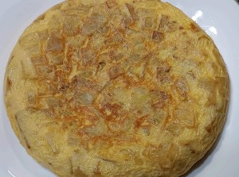
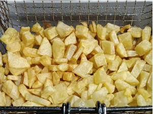
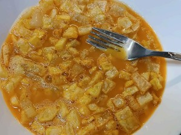

Tortilla de Patata

Ingredientes para dos personas
- 4 huevos
- 3 patatas
- Aceite de oliva
- Sal
Preparación
1. Pelamos las patatas, las cortamos en trozos pequeños, las lavamos y las escurrimos.
2. Añadimos sal y las freímos en una freidora o sartén.

3. En un bol, batimos los huevos con un poco de sal.
4. Añadimos las patatas fritas al bol con el huevo y mezclamos bien.

5. Ponemos un poco de aceite en la sartén, vertemos la mezcla y la cuajamos al gusto.
⬅ Volver al listado de recetas